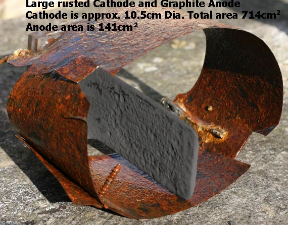

Sodium Chlorate cell run using a very large Cathode
A Sodium Chlorate cell was set up to investigate the effect (if any) of using a very large Cathode.
The Cell volume was 2.2 litres and was pH controlled. Anode was Graphite with a surface area of 141 square cm.
The Cathode was mild steel which was well rusted with a total surface area (2 * 352 = front + back) of 750 square cm and was coaxial to the Anode.
There was no additives in the cell to stop reduction at the Cathode. Current was 4 Amps (constant) which give
a current density on the Anode of 28mA per square cm and a Cathode current density of 5.3mA per square cm (it would have been higher on the side facing the Anode and much much lower on the side away from the Anode.
The cell temperature was approx. 48°C.

The cell was let run with small (sensible) Cathodes for approx. 2.7 days to allow pH and acid additions
to stabilize. The large Cathode was then inserted and the cell run for a further 10.4 days. Samples were taken
and titration's carried out in order to ascertain current efficiency. The current efficiency (CE) for the first 2.7 days was found to be greater than 90%. The CE was found to
be NEGATIVE over the 10.4 day period (large Cathode used) as there was 164 grams of Chlorate present in the cell at the beginning of the
10.4 day period and only 60 grams present at the end of the 10.4 day period.
More Chlorate was destroyed than was made over the 10.4 day period.
It is very important to keep Cathode size sensible when running cells with no additives (Green cells). This
is especially true when using Graphite (and Magnetite too) as the working current density on these Anodes are low compared to all other Anodes which will give correspondingly low current densities on Cathodes of corresponding area (or bigger) to the Anode. The problem will not arise if you are using a Pt Anode with a CD of 300mA
per square cm unless you are going to use a very very large Cathode area in relation to the Anode area. Try to have a current density on the Cathode at 30 mA per square cm minimum. Probably better to keep it above 60mA per square cm. if you are not using additives.
The cell also demanded
approx. 17% more acid than was normal in order to keep pH at around neutral (of course there was no point in running the damn thing at all!).
The sides of the Cathodes that are not facing the Anode will have a much lower current density that the side
facing the Anode especially if the Cathodes are made from fairly large flat pieces of material and go out close to the edges of the cell. It would be good practice to cover the sides of the Cathodes that are away from the Anodes with a nonconductor so that this area cannot be a possible problem for reduction of products.
The problem of low current density on the side of Cathode away from the Anode will be even more severe if
you are using a coaxial Cathode. Do not use coaxial Cathodes at all in Chlorate cells.
If you do not want to cover the back sides of Cathodes with nonconductor material you could instead drill
lots of holes (or use mesh) for the Cathode. This will increase the current density on the back side of the
Cathode as there will be less surface area and the back side of the Cathode will 'see' more of the Voltage
gradient that is distributed in the cell electrolyte.
Do not be tempted to put one small Cathode in the cell as this will have implications for current distribution on the Anode.
To sum up
Keep total Cathode area in a cell to a minimum especially when using Graphite or Magnetite. Construct Cathodes in such a way that there will be sensible current distribution on the Anode. Cover the back side of Cathodes with nonconductor and or use mesh or drill holes in Cathodes.
Industry does not have a problem with the 'back' sides of Cathodes as all industrial cells have large groups of electrodes and not just one single Anode sitting in a single container with two Cathodes which will have 50% of their area not in direct 'line of site' to the Anode.
HIT THE BACK BUTTON ON YOUR BROWSER
BACK TO TOP